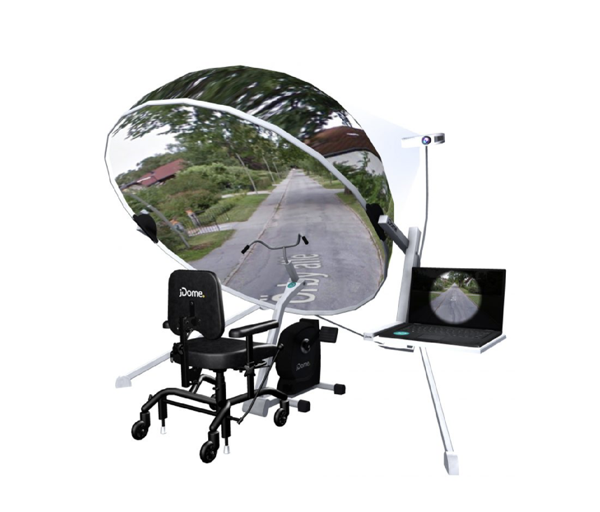
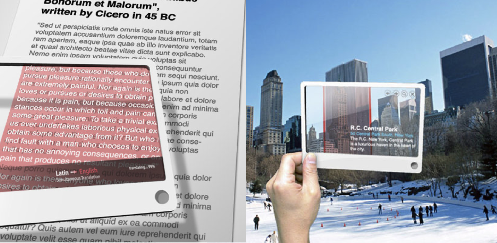
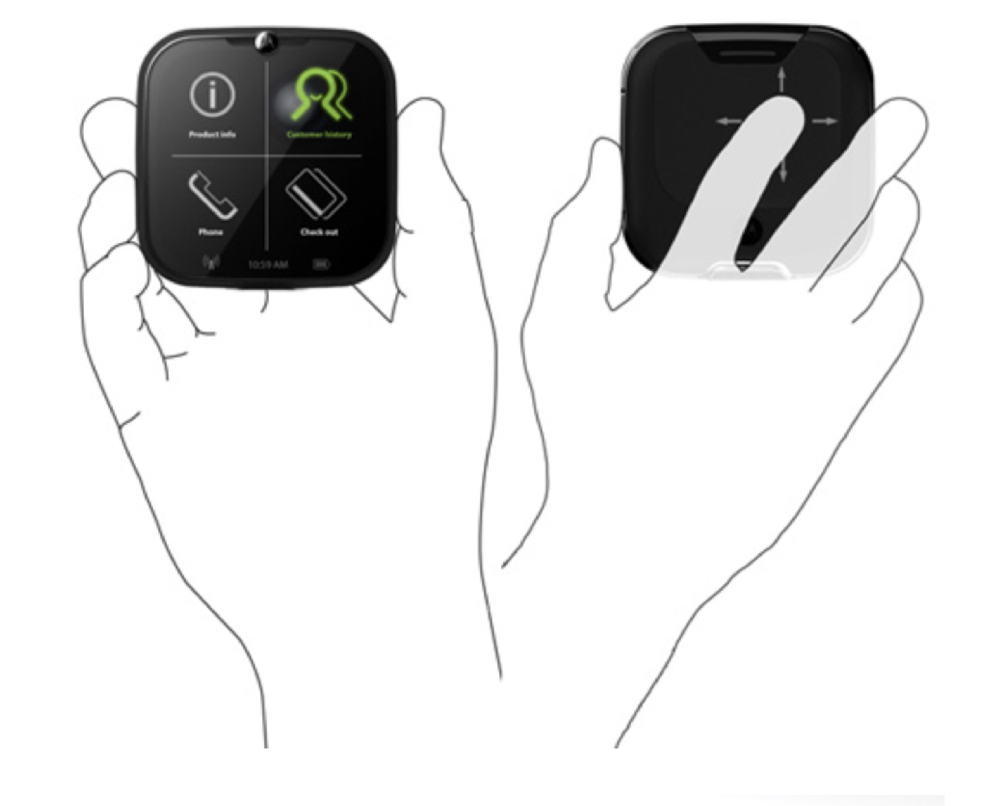

Aufgabe #011
Futuristic Interfaces
BikeAround
Mit BikeAround ist es möglich, einen Großteil der Welt zu erleben und das anhand von Bildern, die mit Google Street View aufgenommen wurden. Durch den Lenker und die Pedale bekommt an das Gefühl wirklich Rad zu fahren.

Ich möchte mehr erfahren!
Futuristic Glass
Mit diesem Konzept wird es möglich, von überall und jederzeit auf das Web zuzugreifen. Als Beispiel kann dieses futuristische Interface als Stadtführer verwendet werden oder um diverse Texte zu übersetzen.

Ich möchte mehr erfahren!
Motorola Sparrow
Das Motorola Sparrow bietet eine Verbesserung, um Einzelhandelsgeschäften ein mobiles Verkaufsstellengerät zur Verfügung zu stellen. Dadurch können die gestiegenen Serviceanforderungen der Verbraucher erfüllt werden, während gleichzeitig die Kasse dezentralisiert wird. Viele Hightech-Elektronikgeschäfte statten ihre Mitarbeiter inzwischen mit mobilen Geräten für den Point of Sale aus.

Ich möchte mehr erfahren!